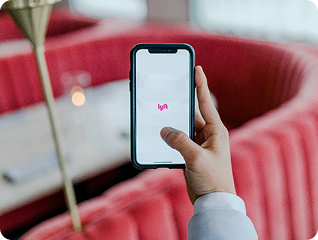

-
ShopEase

Mobile Application E-Commerce
-
Insightly
💡
Developed a SaaS-based analytics dashboard for Insightly, focusing on providing actionable insights through a user-centric design. The dashboard improved data accessibility and was adopted by 80% of users within the first three months.
Web 3.0 HTML Dashboard